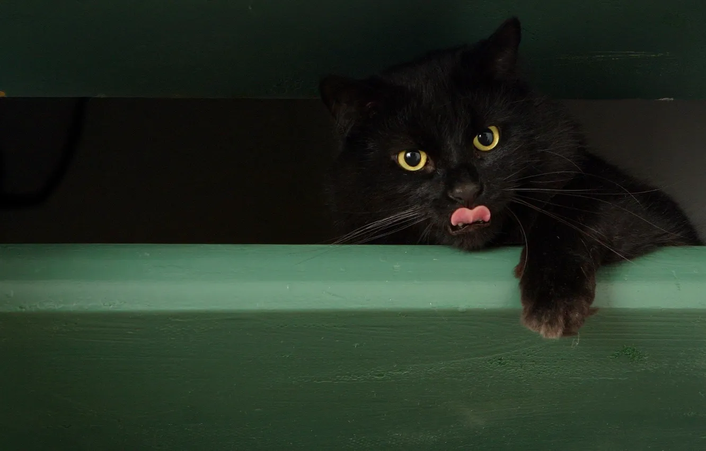

Hello
Относительная ссылка - линк, который указывает не полный путь к документу/файлу. При этом путь данной ссылки можно высчитать лишь относительно чего-либо - конкретного ресурса, директории, сервера, ПК и т. д.
Абсолютный путь — это полный путь к файлу, показывающий точное место расположения этого файла. Такая ссылка остается неизменной вне зависимости от того, где расположен содержащий ее документ.
